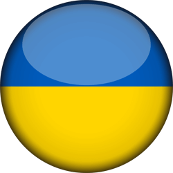

Ars Linguodidacticae
Peer review policy
Author guidelines
Author guidelines
Правила для авторів
Publication ethics
Archive

Титул
Зміст
Любашенко О. В., Попова О. В. [Дискусія як метод інтерактивного навчання мови в середній школі]{Interactive language teaching through discussian in a secondary school classroom} 4-11
Morska L. I. [Teaching intercultural communicative competence: theoretical background]{Teaching intercultural communicative competence: theoretical background} 12-18
Хоменко О. В. [Полілінгвальна освіта у нелінгвістичних вищих навчальних закладах]{Polylingual education in non-linguistic higher education institutions} 18-28
Шовковий В. М. [Формування в майбутніх викладачів класичних мов методичної компетентності методом проектів]{Developing pedagogical competence in prospective teachers of classical languages through project methodology} 29-38
Квасова О. Г., Лямзіна Н. К. [Формування інтегрованих умінь читання й письма у процесі виконання студентами веб-квесту]{Building students’ reading-into-writing skills in webquest} 38-44
Кавицька Т. І., Осідак В. В. [Контроль та оцінювання у навчанні граматики англійської мови студентів-філологів]{Assessment for learning in teaching grammar to tertiary students} 45-55
Крисак Л. [Структурно-композиційні особливості англійськогопрофесійно орієнтованого діалогічного мовлення майбутніх лікарів]{Structure and composition of english professionally oriented dialogue of prospective physicians} 55-63
Трикашна Ю. [Організація роботи з автентичним британським художнім фільмом з метою формування соціокультурної компетентності у майбутніх філологів]{Activities based on british feature films to develop sociocultural competence of students of linguistics} 64-70
Білоус С. В. [Організація процесу навчання майбутніх філологів публічного виступу англійською мовою]{Teaching public speaking to philology majors: organizing the process} 71-75
Дружченко Т. П. [Особливості організації процесу навчання монологічного мовлення студентів спеціальності «право» на засадах диференційованого підходу]{Teaching english monologic oral production to law students: differentiated approach} 76-82
Сапожнікова О. В. [Змістове наповнення та методика викладання на підготовчому відділенні навчальної дисципліни «українська мова й література» для абітурієнтів математично-природничих, інженерних та гуманітарних спеціальностей]{Teaching Ukrainian Language and Literature to prospective students of Science, Engineering and Humanities: Content and methodology} 83-92